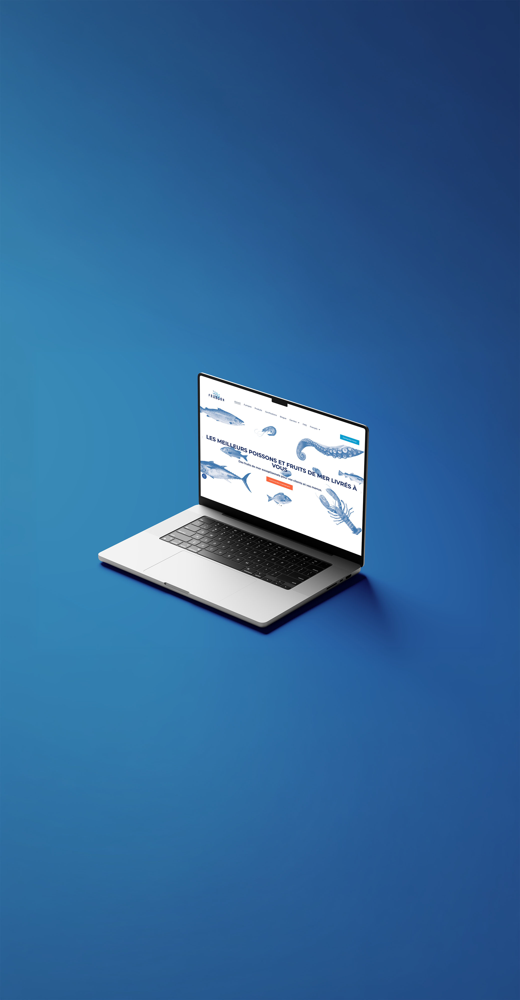

Vague d'Impact
2025
Ce projet initié par Frandon Seafoods Inc, entreprise de livraison de poissons frais pour épiceries et restaurateurs, vise à créer des déclinaisons graphiques inspirées du guide de marque existant. De plus, l’arrivée du programme environnemental Vague d’Impact nécessitait la création de son propre logo.
Parmi les tâches, on demandait le peaufinement du visuel moteur actuel et la création de composantes graphiques pour le web, tels que des icônes représentant les valeurs de la compagnie.
Ce mandat démontre l’évolution visuelle de la marque et son adaptation à de nouveaux contextes, visible à partir du lien suivant:
VISITER LE SITE WEB
Frandon Seafoods Inc
Design graphique
Guide d'utilisation